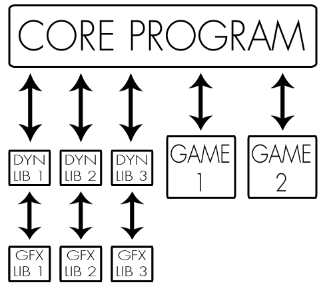

We are a team of three second-year students at EPITECH Paris, specializing in C++ development. Our passion for programming and video games has led us to create the Arcade Gaming Platform. We have diverse programming experience and expertise in multiple programming languages such as Elixir, Haskell, and Assembly.
Together, we have worked tirelessly to create a platform that allows gamers to enjoy classic games such as Nibbler and Snake in a modern way. We hope you enjoy our creation!
Controls:
Nibbler:
The player controls a snake-like creature that moves around the screen, eating food. As the creature eats, it grows in length.
The player must avoid colliding with the creature's own body or the walls of the screen. The game ends when the creature collides with itself or the wall.
Snake:
The player controls a snake that moves around the screen, eating food. As the snake eats, it grows in length.
The player must avoid colliding with the snake's own body or the walls of the screen. The game ends when the snake collides with itself or the wall.
To install the Arcade Gaming Platform, download the game ZIP file by clicking the button below, and install the game by following the instructions provided in the README file. If you have any issues during the installation process, please feel free to contact us for assistance.
If you want to use our program with Ubuntu, you need to install the following libraries:
$ sudo apt-get install libncurses5-dev libncursesw5-dev
$ sudo apt-get install libsdl2-dev libsdl2-image-dev libsdl2-ttf-dev libsdl2-mixer-dev
$ sudo apt-get install libsfml-dev
Arcade is a gaming platform built by three EPITECH students who love programming and video games. The platform allows users to choose between two games: Nibbler and Snake. It also includes a configuration menu for customizing the gaming experience.
The platform uses three different graphics libraries: SDL2, SFML, and NCURSES. These libraries are implemented as dynamic libraries, which are loaded at runtime. This ensures a modular and flexible design, with each library acting as a plug-in that provides unique capabilities.
It is strictly forbidden for the main program to directly reference any graphics library. Instead, each dynamic library is responsible for managing its own graphics and events. This separation ensures that the game logic remains independent of the rendering process.